Last Updated: 2020-07-07
Overview
The Mule Runtime supports SAP integration through our Anypoint Connector for SAP, an SAP-certified Java connector that leverages the SAP Java Connector (JCo) libraries, thus allowing Mule applications to:
- Execute BAPI functions over the RFC protocol, supporting Synchronous RFC (sRFC), Transactional RFC (tRFC), and Queued RFC (qRFC)
- Act as a JCo Server to be called as a BAPI over sRFC, tRFC, and qRFC.
- Send IDocs over tRFC and qRFC.
- Receive IDocs over tRFC and qRFC.
- Transform SAP objects (JCo Function/BAPI & IDocs) to and from XML.
What you'll build
In this codelab, you're going to build simple Mule application that will call SAP and execute a BAPI function over RFC. The application will be called through a simple HTTP request with the response returned from SAP in JSON format.
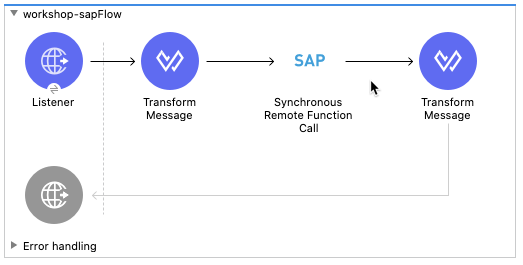
What you'll learn
- How to configure the SAP Connector
This codelab is focused on integrating with SAP ECC R/3 or SAP S/4 HANA On-Premises
What you'll need
- Anypoint Studio 7.5.x
- SAP Connector 5.x
- SAP ECC R3 and/or S/4 HANA On-Premises
Create a new project
Open Anypoint Studio and create a new Mule Project

In the New Mule Project window, give the project a name (e.g. workshop-sap), select a Runtime, and then click on Finish

Once the new project is created, you'll be presented with a blank canvas. In the Mule Palette on the right, click on HTTP and then drag and drop the Listener into the canvas.

Add HTTP Listener Configuration
If the Mule Properties tab doesn't open, click the Listener icon and click on the green plus sign to create a new Connector configuration.

Under the General tab, and in the Connection section, take note of the port. By default this will be 8081. Go ahead and click on OK to accept the defaults and proceed.
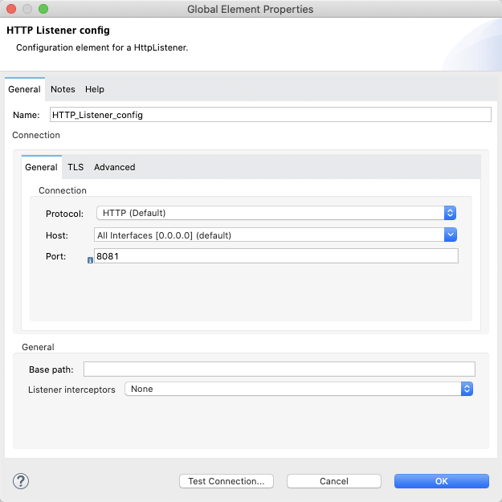
Set Listener Path
Back in the Listener Mule properties tab, fill in the Path field with the value /customers.

Add the SAP Connector
Back in the Mule Palette, we need to add the SAP Connector. Click on Search in Exchange

In the Add Modules to Project window, type in ‘sap' for the search term (1) In the Available modules (2) select SAP Connector - Mule 4 and click on Add (3) Click on Finish (4) to add the module to the project.
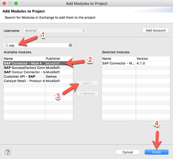
From the list of operations from SAP, drag and drop the Synchronous Remote Function Call onto the canvas. Place it after the Listener module.

Create Configuration Properties File
For this guide, we'll configure properties in a separate configuration file. Right-click on the src/main/resources folder and select New > File and name the file app.properties

Copy and paste the following into the newly create file. Populate the properties with the credentials and settings for your SAP instance. If needed, you can use the credentials below from our sandbox instance. Contact the instructor for the login and password.
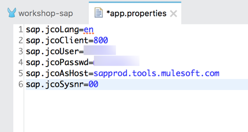
sap.jcoLang=en
sap.jcoClient=
sap.jcoUser=
sap.jcoPasswd=
sap.jcoAsHost=
sap.jcoSysnr=In the canvas, click on Global Elements (1) and then click on Create (2)

In the Filter, type in ‘prop' (1) and select Configuration properties (2) and then click on OK (3)
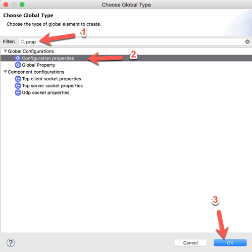
In the Configuration properties, click on the browse file button (1).

Locate and select the app.properties file you created (2) and then click on OK (3) Back on the previous window, click on OK to save your changes (4).
Add SAP Connector Configuration
Let's go back to the SAP Connector and use those properties to connect. In the Synchronous Remote Function Call operation, click on the green plus sign to configure the Connector configuration.
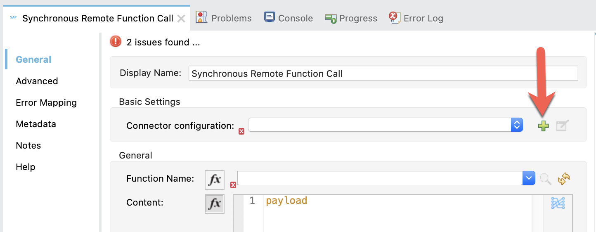
Change the Connection drop-down to Simple connection provider

In the General tab, under Required Libraries, click on the Configure button next to the iDoc Library field. Select Use local file

In the Choose local file, click on Browse and point it to the sapidoc3.jar file. Keep the default settings and click on OK
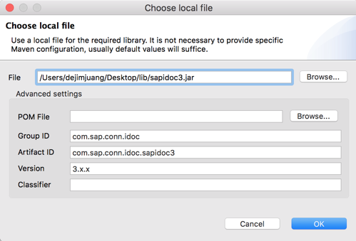
Back in the SAP Config window, there should be a green checkmark next to the iDoc Library field. Next, let's add the JCo Library. Click on Configure and select Use local file
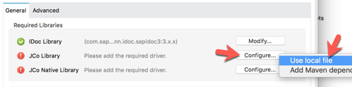
In the Choose local file window, click on Browse and point it to the sapjco3.jar file. Keep the default settings and click on OK.
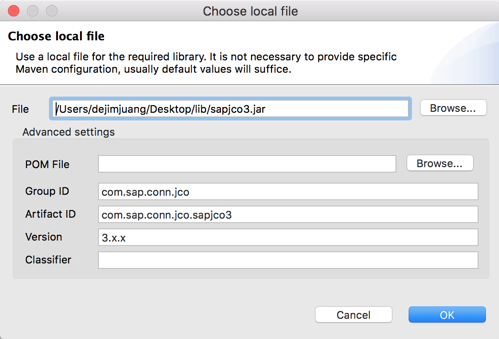
Back in the SAP Config window, there should be a green checkmark next to the JCo Library field.
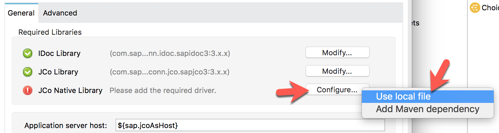
Next, let's add the JCo Native Library. Click on Configure and select Use local file
For the JCO native libraries, they are platform specific. When you go to browse and select the files, be sure to change the dropdown to the specific extension you're looking for. Once you select the file, click on Open

JCo Platform-specific native libraries:
- Windows - sapjco3.dll
- Mac OS - libsapjco3.jnilib
- Linux - libsapjco3.so
Keep the default settings on the Choose local file window and click on OK

Back in the SAP Config window, all the required libraries should be green now.

Fill in the remaining fields with the corresponding property placeholders below.
Application Server Host: | ${sap.jcoAsHost} |
Username | ${sap.jcoUser} |
Password | ${sap.jcoPasswd} |
System Number | ${sap.jcoSysnr} |
Client | ${sap.jcoClient} |
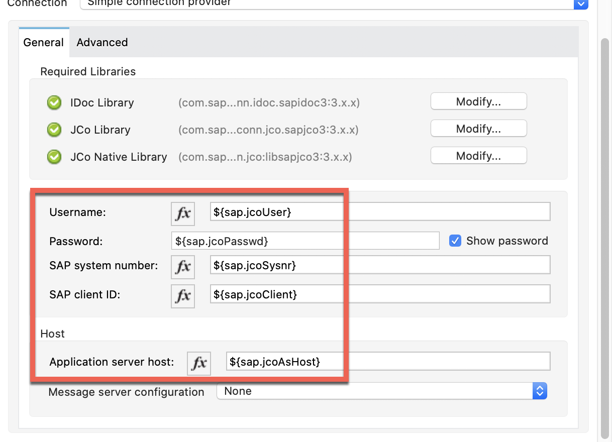
Click on Test Connection to make sure everything has been configured correctly before clicking on OK.
Pick the BAPI / Function to Call
Back on the Synchronous Remote Function Call tab, click on the refresh button next to the Function Name field. Once it refreshes, click on the magnifying glass icon next to it.
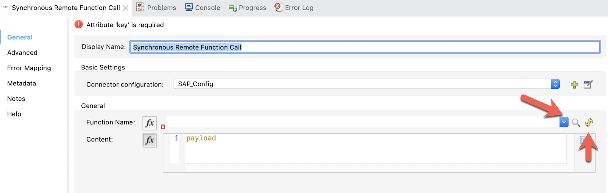
In the search field, type in BAPI_CUSTOMER_GET and then select the BAPI_CUSTOMER_GETLIST item from the matching items list.
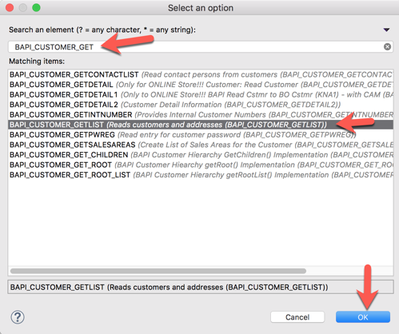
Click OK.
If you know the name of the BAPI you want to use from your system, you can type that into the Function Name field as well.
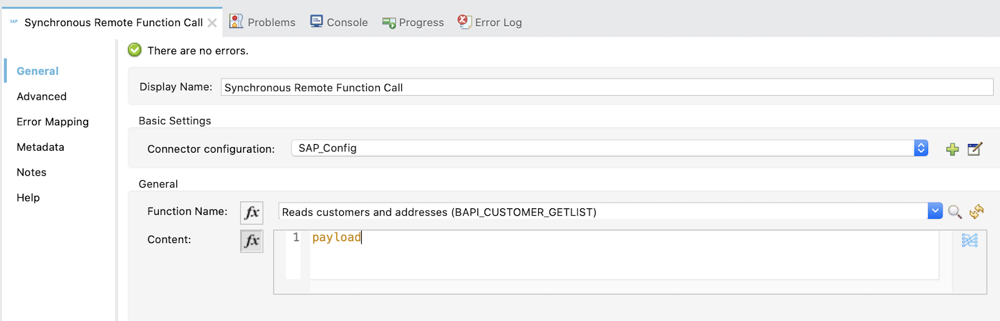
And completes the configuration of the SAP Connector. In this next section you will formulate the request that needs to be passed into the BAPI/Function call. You'll use DataWeave to create the message.
Create DataWeave Script
Now that the SAP Connector is configured with the correct credentials and BAPI we intend to use, we need to setup the request message to pass in.
In the Mule Palette, find and drag and drop the Transform Message component into the canvas. Drop it between the Listener and the Synchronous Remote Function Call operation
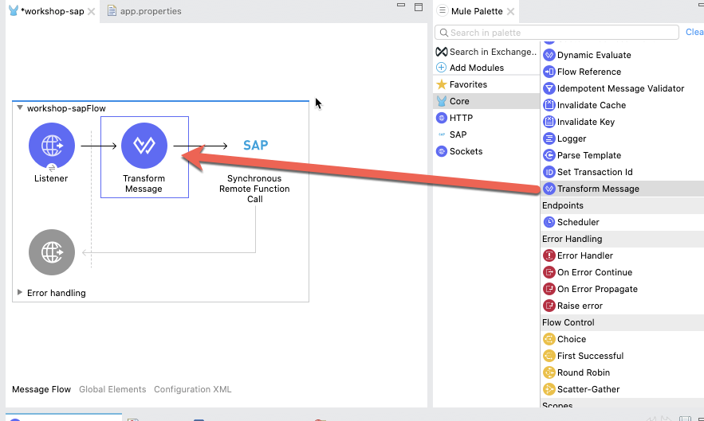
In the Transform Message tab, you can see how the component provides metadata around the output.
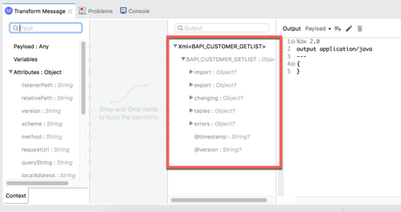
Let's make some modifications to the message. First, we'll set the maximum number of rows to return from SAP.
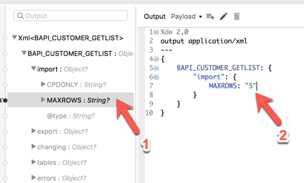
Under the import node, double-click on MAXROWS
Notice how the DataWeave script is generated. Change null to "5" and be sure to keep the double quotes.
Next we need the IDRANGE of customer records we want returned:
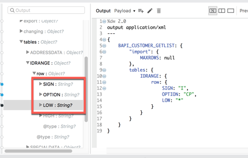
Under the tables node, add the following lines:
- SIGN "I"
- OPTION "CP"
- LOW "*"
The final DataWeave script should look like the following below. You can also copy and paste the script into Studio as well:
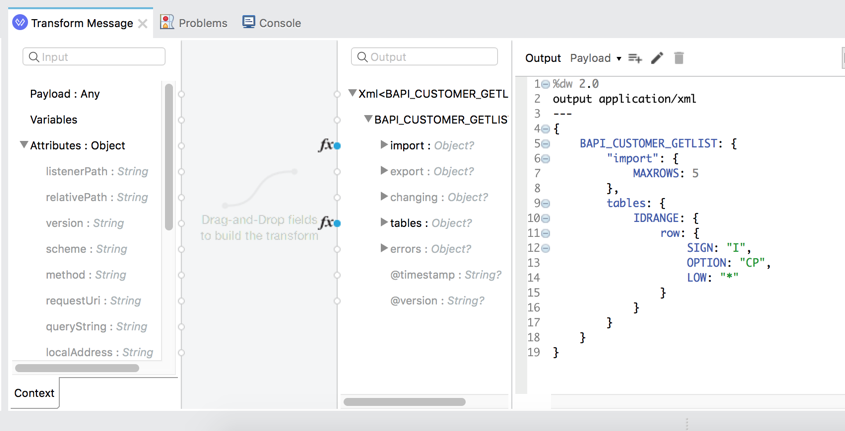
%dw 2.0
output application/xml
---
{
BAPI_CUSTOMER_GETLIST: {
"import": {
MAXROWS: "5"
},
tables: {
IDRANGE: {
row: {
SIGN: "I",
OPTION: "CP",
LOW: "*"
}
}
}
}
}Create DataWeave Script
Once the SAP Connector processes the function, the data will be returned as XML. Let's go ahead and transform that and output the customer list as JSON data.
From the Mule Palette drag and drop a Transform Message module into the canvas. Place it after the Synchronous Remote Function Call operation.
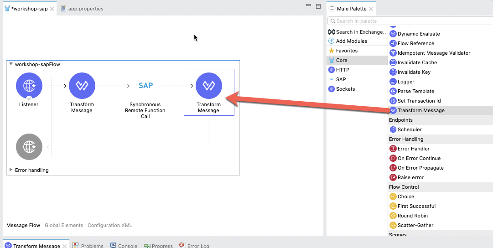
In the Mule Properties tab for the Transform Message component, modify the DataWeave script and paste the following:
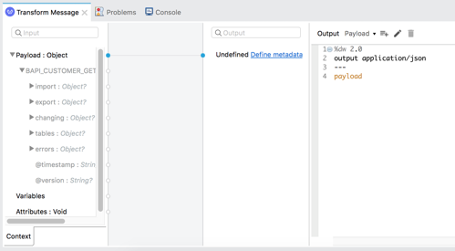
%dw 2.0
output application/json
---
payloadRun Project
Our next step is to test the flow we've built. In the Package Explorer, right click on the canvas and Run project workshop-sap
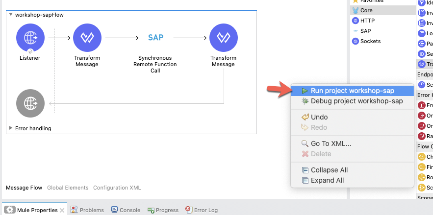
The Console tab should pop-up now. Wait for the status to show DEPLOYED before moving onto the next step.
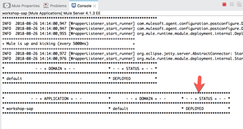
Test Flow
Let's test out our flow now. Switch to your web browser and enter the following URL:
http://localhost:8081/customersIf everything was configured correctly, you should see the following result in your browser. The Mule application that you just created allows you to send a request to an SAP BAPI to get a list of 5 customers and return that list in JSON format.
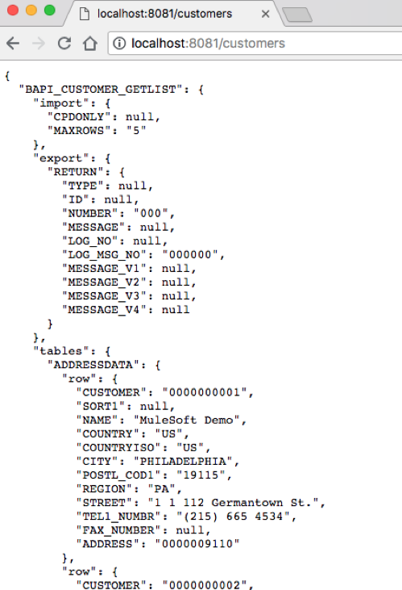
Congratulations, you've successfully built a Mule application that allows you to call your SAP BAPI/Functions.
What's next?
Check out some of these codelabs...
- TBD